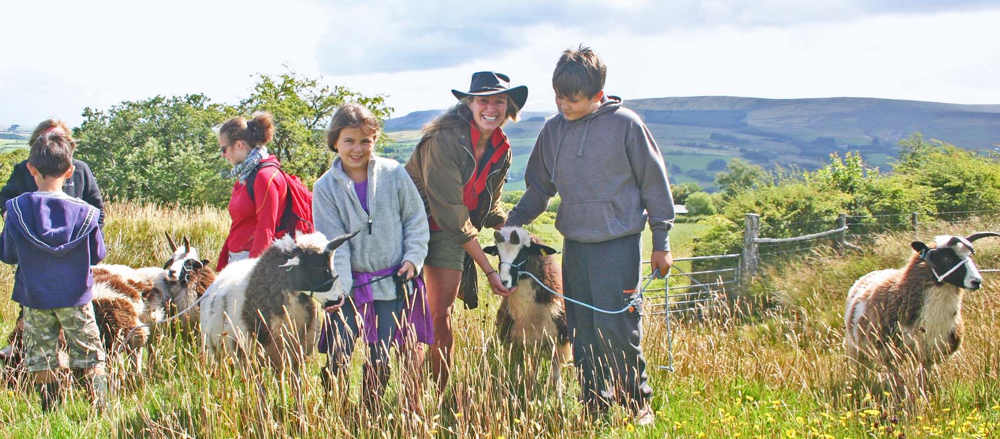

Sheep trekking
Join Meggy and Harry for an Unforgettable Sheep Trekking Adventure!

Looking for a unique way to explore the countryside? Imagine strolling through scenic fields alongside our friendly and cheeky sheep, Meggy and Harry. It’s a one-of-a-kind experience that’s perfect for families, friends, or anyone who loves nature and animals.
Details:
When:
Every Saturday and Sunday at 10:00 AM and 2:00 PM
Duration:
90 minutes
Season:
February to September
Price:
Starting at £25 per person
Meeting Point:
Sunny Meadow Farm, Hilltop Lane, Greenfield, NG15 6YX
Remember to bring your wellies – the fields can get a little muddy, but that’s all part of the fun! Book now and make unforgettable memories with our woolly companions.